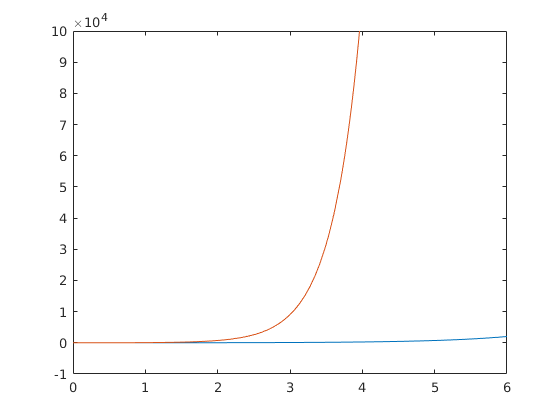

RBE 502 Homework 1
By Alex Tacescu
Contents
Problem 1
syms m l0 l theta k t;
Question 1
Assuming l0 is unextended length of string, and l is the extended length from l0:
g = 9.81; % m/s % Calculate Kinetic Energy: KE = 1/2*m*diff(l, t)^2 + 1/2*m*(l0 + l)^2 *diff(theta, t)^2; % Calculate Potential Energy: Pspring = 1/2*k*l^2; Pgrav = m*g*(l0+l)*(1-cos(theta))-m*g*l; L = KE - Pspring - Pgrav
L = (981*l*m)/100 - (k*l^2)/2 + (981*m*(cos(theta) - 1)*(l + l0))/100
eq1 = diff(diff(L, diff(l,t)), t) - diff(L, l) == 0; eq2 = diff(diff(L, diff(theta, t)), t) - diff(L, theta) == 0;
Question 2
Question 3
Question 4
The equilibrium is stable, since the differential equations will approach 0 over time
Question 5
Problem 2
syms x(t);
Question 1: State Space Form
x_m = [x; diff(x,t)] x_dot_m = [x_m(2); 5*x_m(2)-10*x]
x_m(t) =
x(t)
diff(x(t), t)
x_dot_m(t) =
x(2)
subs(diff(x(t), t), t, 2)
5*x(2) - 10*x(t)
5*subs(diff(x(t), t), t, 2) - 10*x(t)
Question 2: Determine the equilibrium
The equilibrium point of this system is 0, as demonstrated below
ode1 = diff(x,t) == x; ode2 = diff(x,t) == 5*diff(x,t)-10*x; eq1 = dsolve(ode1, x(0) == 0) eq2 = dsolve(ode2, x(0) == 0)
eq1 = 0 eq2 = 0
Question 3
As seen on the graph below, the system is unstable, because both curves separate from the equilibrium as time passes.
q3_1 = dsolve(ode1, x(0) == 5); % Start at non-equilibrium point q3_2 = dsolve(ode2, x(0) == 5); % Start at non-equilibrium point figure; fplot(real(q3_1(1))) hold on; fplot(real(q3_2(1))) xlim([0, 6]); ylim([-1*10^4, 10*10^4]);